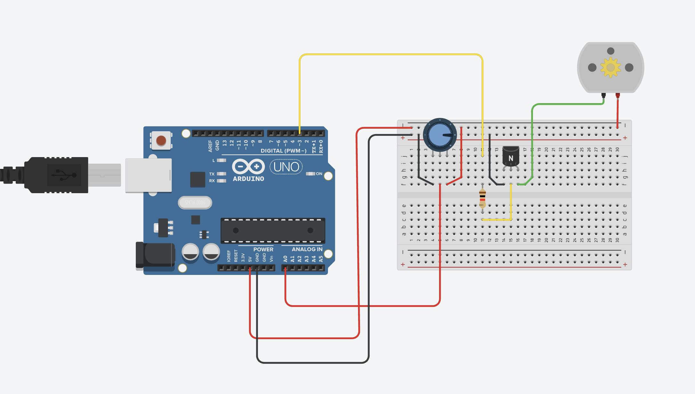

Guía de trabajo
Asignatura: Tecnología / Robótica
Tema: Señales analógicas y PWM
Proyecto: Control de velocidad de un motor DC
Completa tu práctica en pantalla y, si no terminas, puedes guardar tu progreso para continuar después. Al finalizar también puedes generar tu PDF.
1. Introducción
En esta práctica aprenderemos a controlar la velocidad de un motor DC utilizando un potenciómetro y un Arduino UNO.
El potenciómetro funciona como una perilla de control, similar a la que se usa para ajustar el volumen de un aparato. Al girarlo, cambia el valor de voltaje que recibe el Arduino.
El Arduino interpreta ese valor y lo transforma en una señal PWM (Pulse Width Modulation) que controla la velocidad del motor.
Este principio es utilizado en:
- ventiladores electrónicos
- reguladores de velocidad
- robots móviles
- control de iluminación
2. Objetivo
Comprender cómo funcionan las entradas analógicas y cómo se utilizan para controlar dispositivos mediante PWM.
3. Materiales
- Arduino UNO
- Protoboard
- Potenciómetro
- Motor DC
- Transistor NPN
- Resistencia
- Cables jumper
- Cable USB
4. Funcionamiento del circuito
- El potenciómetro envía un valor analógico al Arduino.
- El Arduino lee ese valor utilizando la función
analogRead(). - Ese valor se transforma usando la función
map(). - Finalmente el Arduino envía una señal PWM al motor utilizando
analogWrite().
Esto permite controlar la velocidad del motor dependiendo de la posición del potenciómetro.
5. Conexión del circuito
Potenciómetro
- Pin izquierdo → 5V
- Pin central → A0
- Pin derecho → GND
Motor
- Motor conectado al transistor
- El transistor funciona como interruptor electrónico para controlar el motor
- Pin de control → Pin digital 3 (PWM)
Alimentación
- 5V y GND del Arduino conectados a la protoboard

6. Código del programa
const int motor = 3;
const int potenciometro = A0;
int valorPot;
int velocidad;
void setup() {
pinMode(motor, OUTPUT);
pinMode(potenciometro, INPUT);
}
void loop() {
valorPot = analogRead(potenciometro);
velocidad = map(valorPot, 0, 1023, 0, 255);
analogWrite(motor, velocidad);
}7. Explicación del código
Definición de pines
const int motor = 3;
const int potenciometro = A0;Aquí definimos dónde están conectados los componentes.
Lectura del potenciómetro
valorPot = analogRead(potenciometro);El Arduino lee un valor entre 0 y 1023.
Conversión del valor
velocidad = map(valorPot, 0, 1023, 0, 255);Se transforma el valor para que funcione con PWM.
Control del motor
analogWrite(motor, velocidad);Esto controla la velocidad del motor.
8. Resultados esperados
- Si el potenciómetro está en mínimo, el motor gira lento.
- Si el potenciómetro está en máximo, el motor gira rápido.
- Al girar la perilla, la velocidad cambia gradualmente.
9. Aplicaciones reales
- robots móviles
- ventiladores regulables
- control de velocidad industrial
- vehículos eléctricos
PRACTICARIO
Práctica 11: Control de motor con potenciómetro
Parte 1 - Conceptos básicos
Parte 2 - Arduino
Parte 3 - Programación
Parte 4 - Observación
Parte 5 - Análisis
Observación docente
Esta práctica refuerza la lectura de señales analógicas, el uso de PWM y la relación entre hardware de potencia básica y programación en Arduino.
Firma de revisión
Profesor: ____________________________________